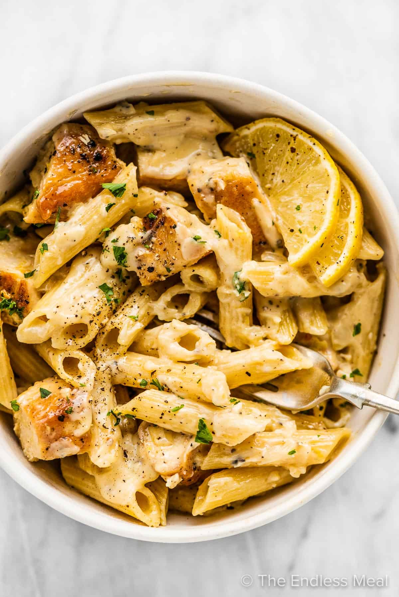

Lemon Chicken Pasta
Home

Description
Bright, zesty, and comforting, this Lemon Chicken Pasta is a perfect
balance of creamy richness and citrusy freshness.
Tender chicken is pan-seared to golden perfection and tossed with
al dente pasta in a luscious lemon garlic sauce, finished with a touch of cream and parmesan.
It's a quick, satisfying dish that’s perfect for weeknight dinners but elegant enough to impress guests.
Ingredients
Pasta and Chicken
- 12 oz of pasta
- 2 chicken breasts
- 0.5 teaspoons of salt and pepper
- 1 tablespoon of olive oil
- Minced parsley (to serve)
Lemon Cream Sauce
- 1 tablespoon of olive oil
- 1 medium yellow onion (finely minced)
- 4 cloves of garlic
- 0.5 cups of chicken stock
- 0.5 cups of grated parmesan cheese
- 0.5 cups of heavy cream
- 0.5 teaspoons of salt and pepper
- Zest and juice from 2 lemons
Steps
- Bring a large pot of salted water to a boil and cook the pasta according to the package directions. Drain then return the pasta to the pot and toss with a little splash of olive oil.
- While the pasta water is heating, pound the chicken breasts with a mallet or rolling pin so that they are ½ inch thick. Season both sides with salt and pepper.
- Heat the olive oil in a large frying pan over medium-high heat. Cook the chicken breasts for 5 minutes per side, reducing the heat if needed, until they are cooked through. Remove them from the pan and slice them into bite-sized pieces once cool enough to handle then add them to the pot with the cooked pasta.
- Make the lemon cream sauce in the same pan as you used for the chicken. Add the olive oil, onion, and garlic and cook for 3 minutes, until the onion is soft and transparent. Add the chicken stock and scrape the pan of any stuck-on bits. Add the parmesan, heavy cream, salt, and pepper and bring the pan to a boil. Reduce the heat and simmer for 2-3 minutes, or until it thickens slightly. Remove the pan from the heat and stir in the lemon zest and juice.
- Pour the lemon cream sauce over the pasta and cooked chicken and toss to combine. Serve with a little parsley sprinkled over the top for color.